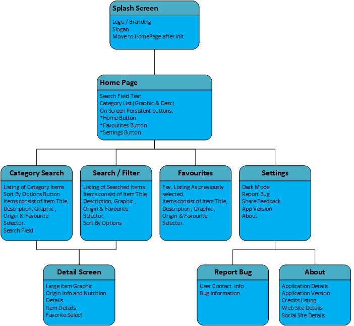
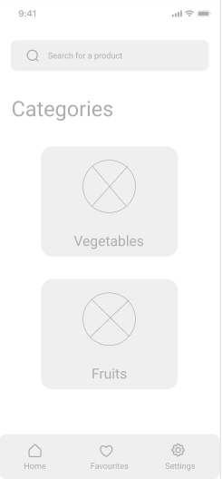
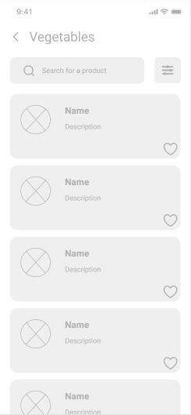
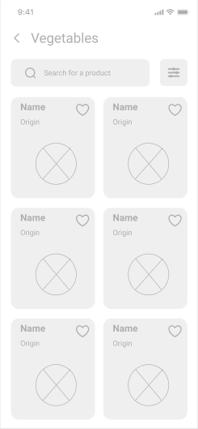
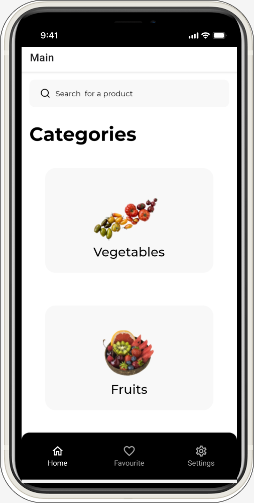
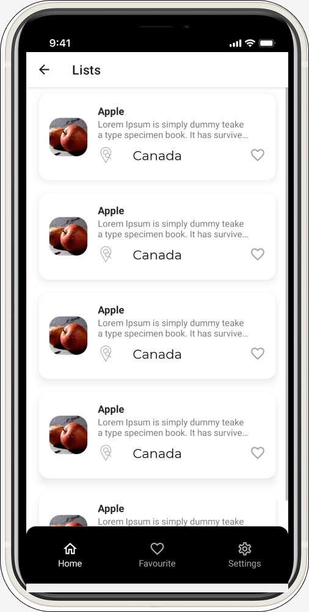
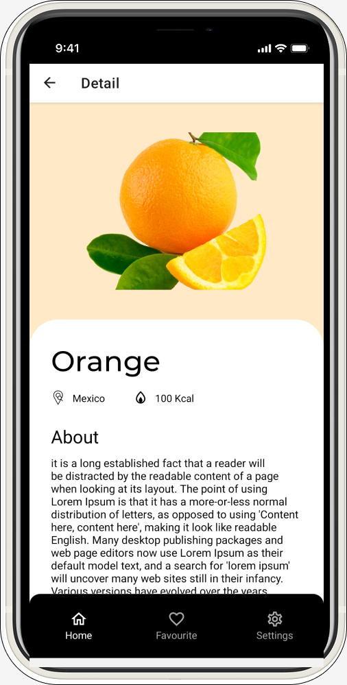

Harvest App
It's a good day for a doughnut!
It has always been a little hard to identify nutritional factors like
calories, sugar, vitamins etc of any food out there, let it be vegetable
or fruit. We want our users to be able to get this information using our
app and don’t be bothered by web searches every time they go grocery
shopping and look for a fruit or vegetable’s nutritional benefits before
buying. We want to provide all these information under one platform which
is our application to make it easy for our users.
Collaboration: Myself, and 5 fellow students.
Language: React-Native
Operating System: Android/iOS
Technologies and Frameworks used:
- JavaScript
- TypeScript
- Views
- Touchable Opacity
- Expo
- GIT
- Yarn
My Colour Scheme
Font-Family: Montserrat
How it started




The Harvest app features a straight forward UX system. We expect our users
to often be on the go when using our app, and they'll want to get to the
required information as quickly as possible. Harvest has all the
funcitionality you need to find out your fruit or vegetables nutrition in
easy sortable lists.
How it's going



The Harvest app delivers a clean, fresh, and vibrant design. We wanted our
app to look welcoming, and be an application that you'd be happy to open
whether you're at home, or out on the go at the grocery